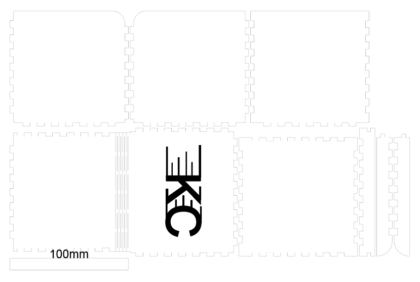

Week 3: Laser Cutting
no fires pls
Project: Make a Box! | |
Our assignment for this week was to use laser cutting to make a box. the requirments were
- Our boxes must have a way of closing and opening. This could be a lid or a sliding door.
- We must add our initials to a part of the box.
- Our boxes must include parametric kerfing.
Making the box my own
Now that i had a plain box, I had to add my initials to it. I downloaded the svg from the site and opened it in Adobe Illustrator. I then used the text tool to put my initials on the box in a different layerand changed that to outlines. Since that was done pretty quickly, and it felt like it would have been a little bland to only add those initials, I tried to lightly decorate the initials to make it seem a bit more interesting. The only thing I did was use rectangles as streaks coming out of the letters, it was hard to make the streaks not too small that they looked stupid without being too big that they cluttered the text(there was a point where I realized I accidently turned the C in my initials into a G), but I was satisfied with the end result.
Text before any decorations
adding streaks to text outline
Text with decorations
Printing the box
I had the schematic for the box as an svg and everything was ready to go. Now all that was left was to go to the machine and have the box cut out. This part went relatively smoothly(which is lucky because my appointment was at 8pm, so I would have been kicked out of the lab had I taken any longer.) One issue that did arise however, were peices of the cut not going all the way through the wood on some areas, I am guessing the issue was thickness, but maybe it was something with my focussing. Luckily, it was small enough and the cut was deep enough for me to rip it into a part that was usable in the box.
My Box is Complete!
Assembling the box went by relatively qucikly. It shoulf have gone even faster had I not made some pretty dumb mistakes on how which things should go where, and forgetting that I put my ininitials on the top of the box and tried assembling it with the top as the side, But besides a few hiccups, the box is fully assembeled and does not seem to be falling apart so I guess this was a success.